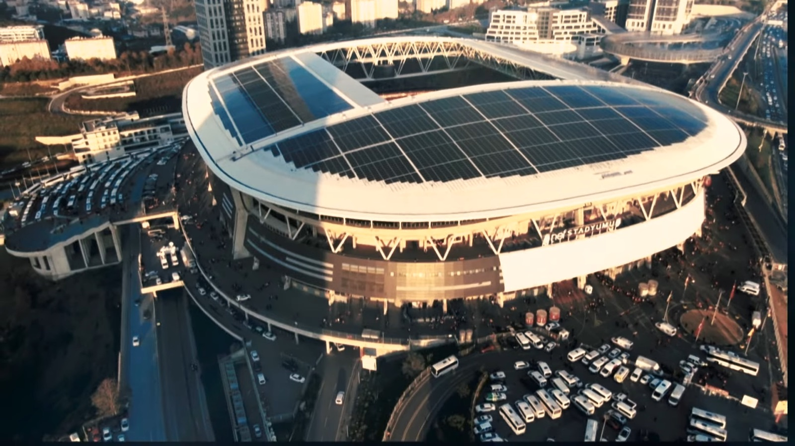
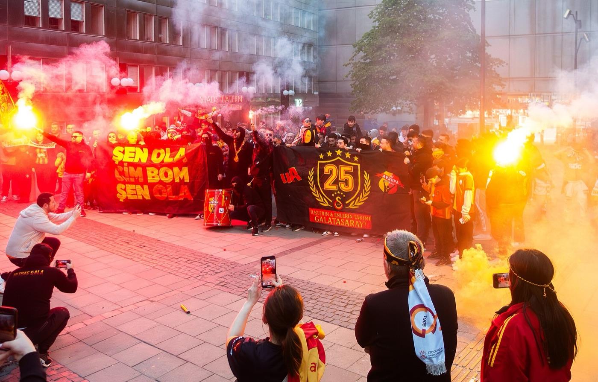
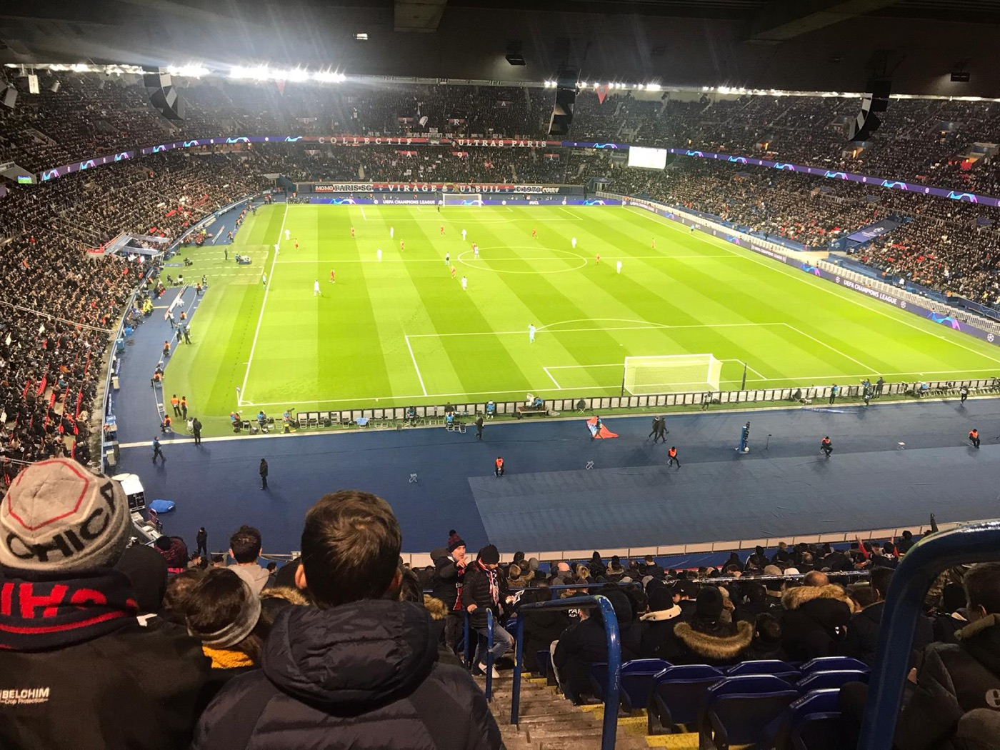
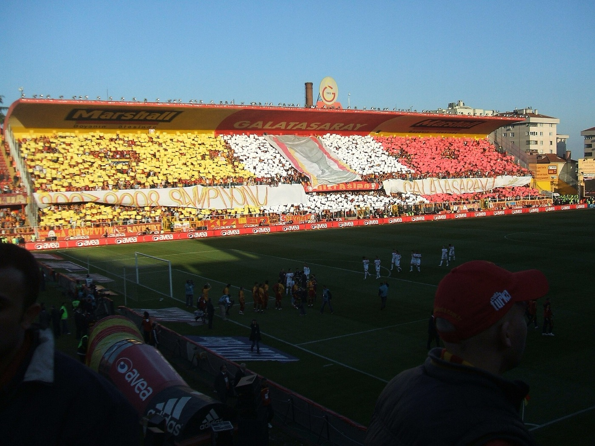
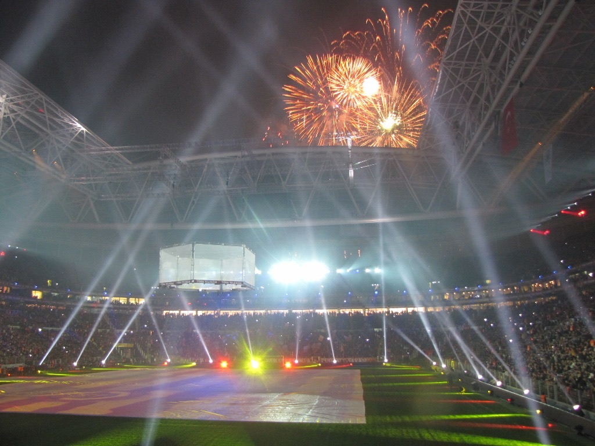
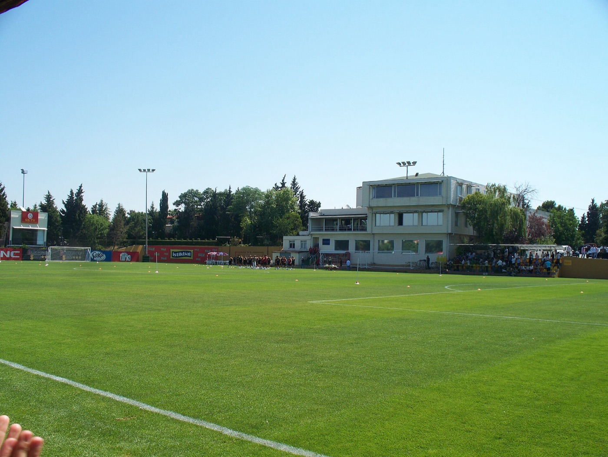

Kareem
Head of Department
Leads the physio and performance staff. Builds the season macrocycle with the head coach, sets the team goals, and signs off every change to training load.
- Season plan & goals
- Macrocycle
- Final sign-off

PE periodization project · 2026/27 season
Our department's training plan for the reigning Süper Lig champions, built around the real 2026/27 fixture list. It runs from the first pre-season session on 7 July 2026 to the Champions League final on 5 June 2027.
RAMS Park, Istanbul · Photo: beIN SPORTS Türkiye, CC BY 3.0
The department
Four people share the season. The head of department signs off the plan; each specialist owns one part of it.
Head of Department
Leads the physio and performance staff. Builds the season macrocycle with the head coach, sets the team goals, and signs off every change to training load.
Reports to the Head of Department
Head Physiotherapist
Runs recovery days, injury screening and return-to-play. Keeps injury risk low through the winter fixture pile-up.
Strength & Conditioning Coach
Plans the speed, strength and endurance loads for each block, including the May taper.
Sports Scientist
Tracks the fixture calendar, GPS and wellness data, and flags players whose weekly load is too high.
KLead: Kareem
Training starts on 7 July at the Kemerburgaz Metin Oktay facilities, followed by a camp in Austria. Friendlies against Ümraniyespor, Monza, Venezia, Rennes and Villarreal.
34 rounds against 17 opponents. Our last league game of 2026 is on 19 December; the league restarts on 15–18 January.
Eight league-phase matches on Tuesday and Wednesday nights until 27 January. Knockout rounds run from February to May, and the final is on 5 June in Madrid.
Semi-final against Konyaspor on 4 or 5 January, then the final on 9 January.
We enter in Round 5 (15–24 December). Every tie is a single match except the two-legged semi-final. The final is on 29 May.
| # | Club | P | W | D | L | GD | Pts |
|---|

Every competition on one calendar, checked against the published 2026/27 schedules. The top band shows the macrocycle phases. Champions League knockout rounds and later cup rounds only happen if we keep winning, so they are drawn as windows.
ALead: Ali

| Date | Competition | Match | Venue |
|---|
League dates for Weeks 17–33 (January to May) are set later by the Turkish Football Federation and can move for TV and European games. All dates checked in October 2026.
The whole year on one chart. Each column is a mesocycle. Each colour shows how hard we train that quality during the block.
KLead: Kareem
| Pre-season7 Jul – 13 Aug | Early season14 Aug – 31 Oct | Winter congestion1 Nov – 19 Dec | Mini-break & reload20 Dec – 3 Jan | Championship push4 Jan – 30 Apr | Tapering & finals1 May – 5 JunOur selected mesocycle | Off-season6 Jun – early Jul | |
|---|---|---|---|---|---|---|---|
| Phase | Preparatory | Competitive | Competitive | Preparatory | Competitive | Competitive · peak | Transition |
| LoadVolume & intensity | |||||||
| Speed | Maintain | Develop | Maintain | Maintain | Maintain | Maintain | Hold |
| Endurance | Develop | Maintain | Maintain | Develop | Maintain | Hold | Hold |
| Strength | Develop | Maintain | Maintain | Develop | Maintain | Hold | Hold |
| Skills | Maintain | Develop | Maintain | Develop | Develop | Develop | Hold |
| MatchesCompetitive | 5friendlies | 13 | 9–10 | 0–1 | ≈17–29 | ≈4–7 | 0 |
| Focus | Aerobic base, strength, tactical introduction | Speed, team cohesion, two games a week | Keep fitness, active recovery | Short general prep, skill refinement | High-intensity tactics, keep peak fitness | Cut load, stay sharp for the finals | Active rest |
| Big games | Friendlies: Monza, Venezia, Rennes, Villarreal | Barcelona (UCL), Fenerbahçe derby 26 Oct | Aston Villa (UCL), Beşiktaş derby 30 Nov | League winter break | Super Cup, PSG (UCL), UCL knockouts | League ends 23 May, Cup final 29 May | No matches |
Matches are competitive games in each block. Ranges depend on how far we go in the cups and in Europe, and league dates from January are set later by the TFF. Volume and intensity are our planned levels, not measured data.

NLead: Nicolas
May decides the season. We reduce training load step by step so players arrive at the last league games and the finals fresh, while keeping them sharp.

Maintain
Medium load · yellow
Keep neuromuscular sharpness high without overtaxing the central nervous system.
Hold
Low load · red
Save energy for the remaining fixtures and keep everyone in the best possible form.
Hold
Low load · red
Prevent muscular fatigue during the final, most important matches of the season.
Develop
High load · green
Focus heavily on strategy, tactics and set-piece execution for specific opponents.
Training volume compared with a normal in-season week. Intensity stays high so players stay sharp. * if we qualify
The main goal of this final mesocycle is tapering: a progressive reduction of training load that lowers physical and mental stress to maximize performance after an intense training period. By holding endurance and strength (red) and only maintaining speed (yellow), the team saves energy for the final league rounds and the Turkish Cup final on 29 May.
One week from the taper block, building up to the last Süper Lig round on Sunday 23 May. MD means matchday; MD+1 is the day after the previous game and MD−4 is four days before the next one.
BLead: Batuhan & AAli

Low
Recovery
Light cycling, stretching and physio for the starters. Subs play small-sided games to keep fit.
Off
Rest
Full day off for body and mind, to prevent overtraining.
High
Strength & conditioning
High-intensity interval runs, resistance training and possession drills in tight spaces.
Medium
Tactical development
11v11 phase of play on defensive shape and attacking transitions.
Low–Medium
Speed & skills
Short sprint reps, agility ladder work and finishing drills.
Low
Activation & strategy
Set-piece walkthrough (corners, free kicks), reaction games and light dynamic stretching.
Maximum
Matchday
Süper Lig final round: Galatasaray v Gaziantep FK at RAMS Park.